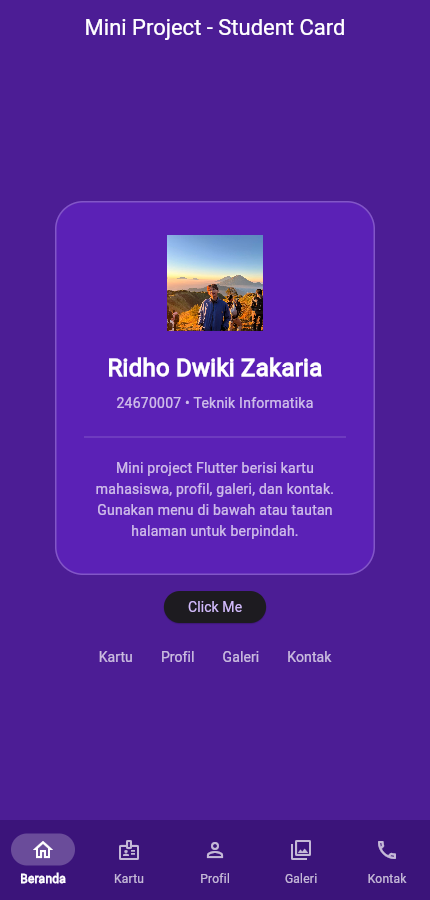
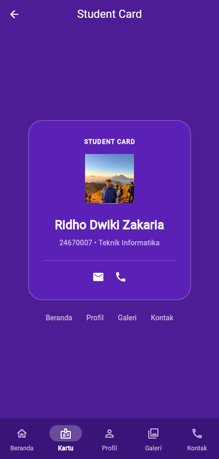
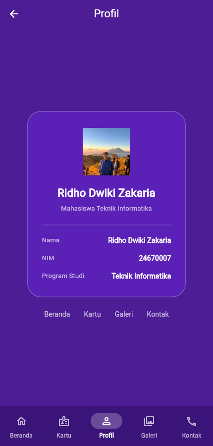
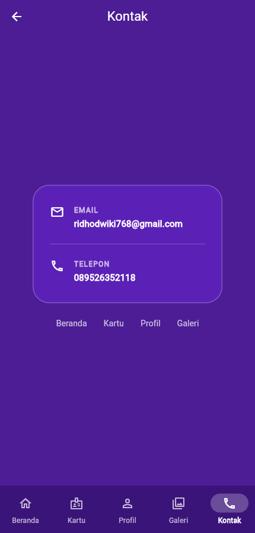
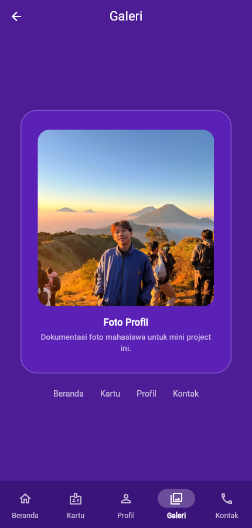
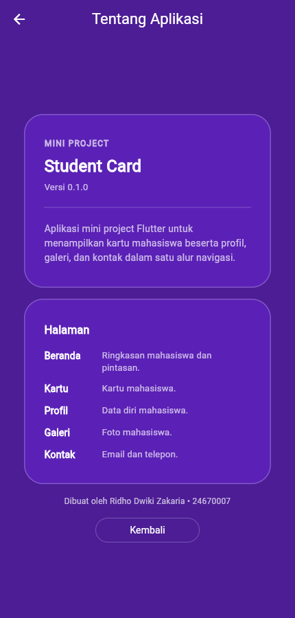

Aplikasi mobile kartu mahasiswa dengan lima halaman utama, halaman informasi tambahan, dan alur navigasi berbasis Navigator.

Student Card adalah aplikasi mobile sederhana untuk menampilkan identitas mahasiswa dalam bentuk kartu digital. Aplikasi ini juga menyediakan halaman profil, galeri foto, kontak, dan informasi tentang aplikasi.
Tujuan pembuatan aplikasi ini adalah menerapkan materi dasar Flutter: penggunaan widget teks, ikon, warna, dan container; penyusunan layout dengan Row dan Column; pengaturan jarak dengan margin, padding, dan SizedBox; penampilan gambar dari aset lokal; serta perpindahan halaman menggunakan Navigator.push dan Navigator.pop. Tema ungu dipilih agar seluruh halaman memiliki identitas visual yang konsisten.
Menampilkan ringkasan mahasiswa dan pintasan menuju halaman lain. Tombol Click Me membuka halaman Tentang Aplikasi.
Menampilkan kartu mahasiswa berisi foto, nama, NIM, program studi, dan ikon email serta telepon.
Menampilkan data diri mahasiswa dalam baris label dan nilai: nama, NIM, dan program studi.
Menampilkan foto mahasiswa berukuran besar dengan sudut melengkung dan keterangan foto.
Menampilkan email dan nomor telepon. Teks kontak dapat diseleksi untuk memudahkan penyalinan.
Halaman tambahan yang menjelaskan versi aplikasi, daftar halaman, dan kredit pembuat. Halaman ini dibuka dari tombol Click Me.
Setiap halaman dapat dibuka melalui bottom navigation dan tautan halaman. Tombol back pada AppBar mengembalikan pengguna ke halaman sebelumnya.
Seluruh kebutuhan materi diterapkan langsung di dalam kode aplikasi. Tabel berikut menghubungkan kebutuhan tugas dengan implementasinya.
| Materi | Penerapan | Lokasi utama |
|---|---|---|
| Text dan TextStyle | Judul halaman, nama mahasiswa, label, dan keterangan dengan ukuran, ketebalan, warna, dan letter spacing. | pages/*.dart, secondpage.dart |
| Icon | Ikon navigasi bawah, ikon email dan telepon, serta ikon pada kartu kontak. | navigation.dart, pages/contact_page.dart |
| Color | Palet ungu aplikasi disimpan sebagai konstanta: latar, kartu, border, dan teks redup. | theme.dart |
| Container | Kartu dengan background, border, radius, padding, dan margin; juga garis pemisah di dalam kartu. | widgets/app_card.dart |
| Row dan Column | Column untuk susunan vertikal halaman; Row untuk baris data profil, baris kontak, dan ikon kartu. | pages/profile_page.dart, pages/contact_page.dart |
| Margin, padding, SizedBox | Padding halaman dan kartu, margin bawah kartu Beranda, serta SizedBox sebagai jarak antar elemen. | widgets/app_page.dart, widgets/app_card.dart, pages/home_page.dart |
| Image.asset | Foto profil dari assets/image/1.png dengan ukuran 96 × 96 dan BoxFit.cover; foto besar di Galeri memakai AspectRatio. |
pages/*.dart |
| StatelessWidget | Seluruh halaman dibangun sebagai widget tanpa state karena hanya menampilkan data. | pages/*.dart |
| MaterialApp dan ThemeData | Konfigurasi judul aplikasi, tema global, AppBar, dan NavigationBar. | main.dart, theme.dart |
| Navigator.push dan Navigator.pop | Semua perpindahan halaman memakai push; tombol back AppBar dan tombol Kembali memakai pop. | app_routes.dart, app_scaffold.dart |
| Callback antarhalaman | Halaman menerima ValueChanged<int> untuk meneruskan indeks halaman tujuan. |
pages/*.dart, widgets/page_links.dart |
theme.dart serta widget
AppCard dan AppPage. Perubahan gaya dasar tidak
perlu diulang di setiap halaman.
Halaman utama dan halaman detail dijalankan pada viewport mobile 430 × 900 piksel.





Aplikasi memiliki lima halaman utama yang dapat dibuka dari bottom
navigation maupun tautan halaman di bagian bawah setiap halaman. Kedua
jalur memakai fungsi yang sama, yaitu openAppPage.
Tombol back pada AppBar tersedia ketika halaman berada di atas tumpukan
navigasi. Tombol tersebut memanggil Navigator.pop(context)
sehingga pengguna kembali ke halaman sebelumnya. Halaman Tentang
Aplikasi juga memiliki tombol Kembali yang memakai mekanisme pop yang
sama.
Data yang dikirim antarhalaman adalah indeks halaman
bertipe int. Halaman menerima callback
ValueChanged<int> bernama onNavigate,
lalu meneruskan indeks tujuan ke openAppPage. Daftar
AppDestination memetakan indeks tersebut menjadi label,
judul AppBar, dan ikon navigasi.
Data mahasiswa seperti nama, NIM, program studi, email, dan telepon
ditulis sebagai konstanta pada masing-masing halaman. Tidak ada model
data terpusat, state management, atau API. Karena itu, halaman tidak
saling mengirim objek mahasiswa. Untuk pengembangan berikutnya, data
dapat dipusatkan pada satu objek Student dan dikirim
melalui konstruktor halaman atau MaterialPageRoute.
flutter analyze dan
flutter test dijalankan untuk memastikan tidak ada error.